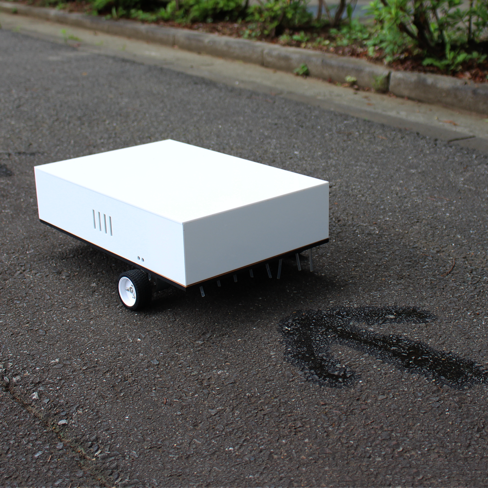

moving arrow
, an installation to create an "rest space" at the moment
moving arrow arrows guides people with signs and letters drawn in water. It is drawn by injecting water droplets from 8 valves. The water signs fades with time and then disappears. By using water as one medium, it creates an expression that involves ephemeral.
moving arrowは、オープンソースハードウェアのSteet Writer をベースにした展示ナビゲーションマシンです。このマシンは移動しながら、水滴のパターンで地面に文字や記号を描き、来場者を会場へと導きます。その情報は、案内の痕跡としてその場所に一時的に刻まれ、時間の経過と共に滲み、薄れ、やがて消えていきます。
Credit
Juri Fujii, Hidemaro Fujinami, Ryo Ohara
Skill
Idea, Concept, Electronics, fabrication, programming
Exhibition
iiiExtra